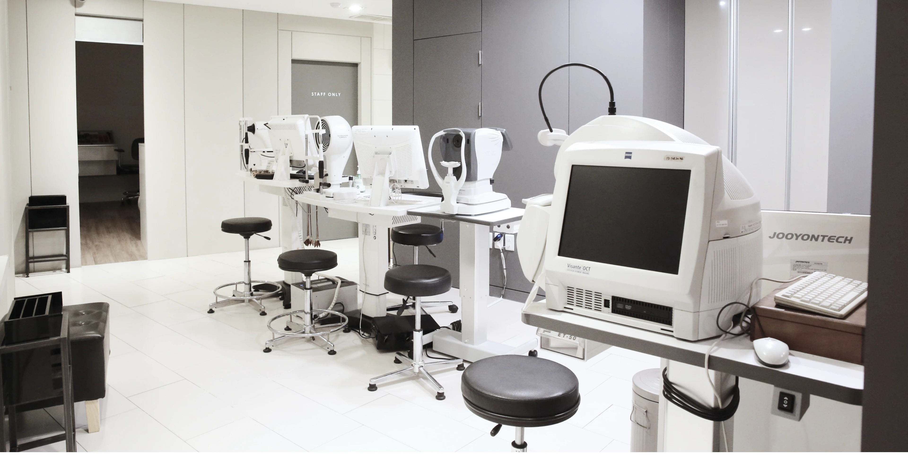
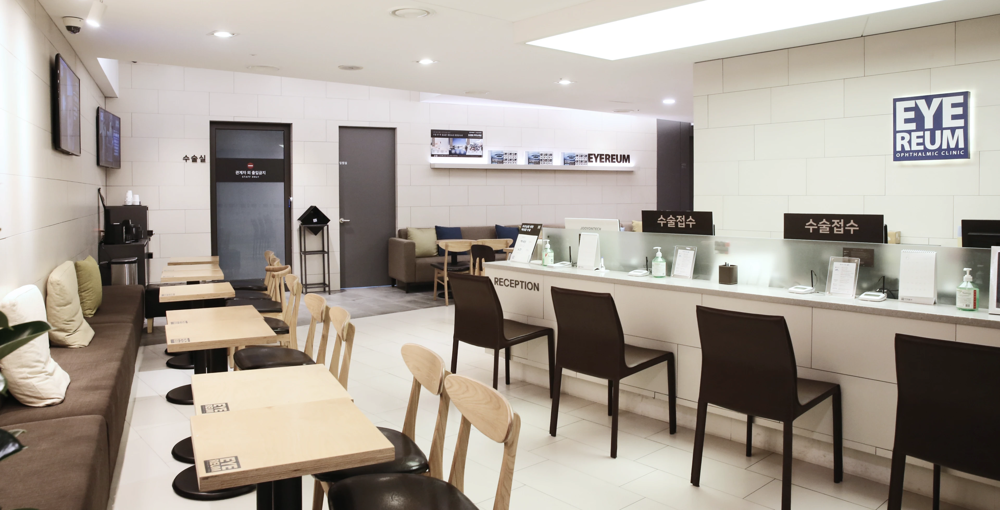
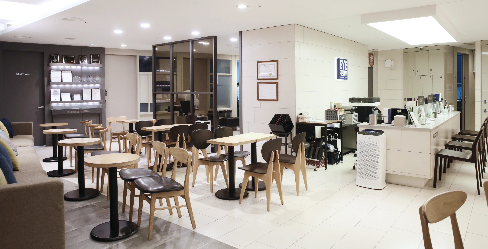

<?php include_once('header.html')?>

<div id="container" class="subpage facilities facilities_02" data-menu-group="아이리움 소개" data-menu-depth2="아이리움 둘러보기" data-menu-depth3="수술">
	<div class="top">
		<div class="inner xl-inner">
			<div>
				<h1>아이리움 둘러보기</h1>
			</div>
			<p>철저한 안전 기준과 첨단 시스템으로 완성된 아이리움의 공간, 그 투명한
				약속의 과정을 직접 확인하세요.</p>
		</div>
	</div><!-- .top end -->


	<div class="sub-category">
		<ul class="inner xl-inner">
			<li><a href="facilities_01.html">검사·진료</a></li>
			<li class="on"><a href="facilities_02.html">수술</a></li>
		</ul>
	</div>


	<hr class="line-041242">


	<div class="contents">
		<div class="swiper facilities-slide">
			<div class="swiper-wrapper">
				<div class="swiper-slide" data-pagination="수술실"></div>
				<div class="swiper-slide" data-pagination="수술실 입구"></div>
				<div class="swiper-slide" data-pagination="수술실 입구"></div>
				<div class="swiper-slide" data-pagination="수술 전 검사센터"></div>
				<div class="swiper-slide" data-pagination="검사실"></div>
				<div class="swiper-slide" data-pagination="수술 대기실"></div>
				<div class="swiper-slide" data-pagination="수술실"></div>
				<div class="swiper-slide" data-pagination="수술실"></div>
				<div class="swiper-slide" data-pagination="세면대"></div>
				<div class="swiper-slide" data-pagination="수술 대기실"></div>
				<div class="swiper-slide" data-pagination="수술 접수 데스크"></div>
				<div class="swiper-slide" data-pagination="수술 대기실"></div>
			</div>
			<div class="pagination"></div>
			<div class="swiper-button-next swiper-button xs"></div>
			<div class="swiper-button-prev swiper-button xs"></div>
		</div>

		<script>
			$(function () {
				var slideWrap = '#container .facilities-slide';
				var slideTxt = [];
				$(slideWrap).find('.swiper-slide').each(function (index, item) {
					slideTxt[index] = $(this).attr('data-pagination');
				});

				var facilitiesSwiper = new Swiper(slideWrap, {
					effect: 'fade',
					fadeEffect: {
						crossFade: true
					},
					navigation: {
						nextEl: '#container .facilities-slide .swiper-button-next',
						prevEl: '#container .facilities-slide .swiper-button-prev',
					},
					observer: true,
					observeParents: true,
					observeSlideChildren: true,
					slidesPerView: 'auto',
					spaceBetween: 0,
					centeredSlides: true,
					pagination: {
						el: slideWrap + ' .pagination',
						clickable: false,
						renderBullet: function (index, className) {
							return '<span class="' + className + '">' + (slideTxt[index]) + '</span>';
						},
					}
				});

				$(slideWrap).find('.pagination').on('mouseenter', '.swiper-pagination-bullet', function () {
					var index = $(this).index();
					facilitiesSwiper.slideTo(index, 800);
				});
			});
		</script>
	</div><!-- .contents end -->

	<?php include_once('inc.review-event.html')?>
	<?php include_once('inc.online.html')?>
	<?php include_once('inc.ticker.html')?>

</div><!-- #container end -->

<?php include_once('footer.html')?>
